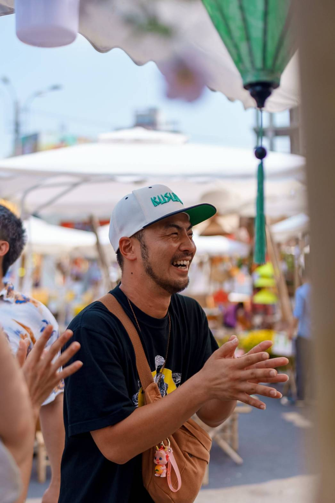

〜Hook Your True Self〜
【くすぶるハウスの心魂一本釣りステイ】
SCROLL
普段は言えない、
かっこ悪い自分も、
抑えてきた野心も。
周りの声にかき消されていた、
あなたの「心の芯の真」。
それを一本釣りするように、
隣で一緒に釣り上げます。
忙しい毎日で置き去りにした
「本当の自分」と、
隠岐の海で待ち合わせ。
誰のためでもない、
自分の人生の主役を取り戻す、
贅沢で静かな再会の時間。
ABOUT

岩井明人、神奈川出身。
新卒で入ろうとした会社が経営不振になった日、その仕事は無くなった。
「まてよ、自由だ」と思った。
ふとしたきっかけで隠岐の島に渡る、25歳独身。
ふわふわしていた自分が、この島で初めて燃えた。
環境が変わったから、関わる人が変わったから、要因はたくさんある。
特別なスキルはなんもない。
でも、くすぶっていて、燃えた人間だからこそ、
今くすぶっている人が来た時、「大丈夫だよ」と言える。
私のストーリーは私のストーリー、あなたがどうやって燃えるのかはあなただけが知ってる。
あなたの【心の芯の真】
一緒に釣り上げる
1 NIGHT, 2 DAYS
Kusuburu Retreat
〜Hook Your True Self〜
予約前
事前ヒアリングシートを記入 & Zoom 30分（無料）
顔合わせ。お互いどう感じるか。「この人なら話せそう」と思えたら、予約アクションへ。
15:00
島の風を感じながら、くすぶるハウスへ。
17:30
荷物を置いて、少し休む。静かな古民家。
18:00
島の食材を使った手料理。食卓を囲みながら、優雅にゆっくり話す。
20:00
翌朝
島の朝ごはん。急がない朝。
09:00
11:00
港までお見送り。